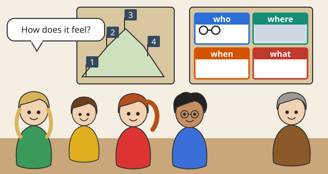
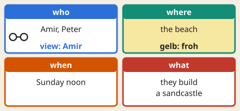

Wo und wann spielt es, und wie fühlt es sich an?
Mit einem KI-Tutor lernen
Ein KI-Tutor erklärt dir diese Seite und hilft dir bei den Aufgaben. Wähl deinen Assistenten:
Mit Claude öffnen Mit ChatGPT öffnen Mit Mistral Vibe öffnen
Du nutzt dein eigenes Konto beim Anbieter. Der Assistent ist kein Angebot von lernapps.net: lernapps liefert nur Inhalte und Aufgaben. Die Wahl gilt für alle Seiten, nur auf diesem Gerät.
Eine Stimmungsfläche an der story map

Die graue Fläche im Feld where ist die Stimmungsfläche. Das Brillenzeichen am Feld who gehört zur story map, nicht zu Amir.
Quelle: eigene Zeichnung. Lizenz: CC-BY-4.0.Die Brille fragt, wessen Sicht eine Geschichte hat. Die graue Fläche im Feld where sagt, wie sich der Ort anfühlt: die Stimmung (englisch: mood).
Aufgabe
Lösung
where und when richtige Antwort
Where ist der Ort, when die Zeit.
who und what
Who sind die Figuren, what ist das Geschehen.
where und what
What sagt, was passiert, nicht wann.
Ort und Zeit stehen in where und when.
Das kannst du danach: Du sagst, wo und wann eine Geschichte spielt, und findest die Wörter, die eine Stimmung erzeugen. Du schreibst eine Szene mit anderer Stimmung neu.
Lies „The Park in November“
1 It was a Tuesday in November, and the afternoon was already turning dark.
2 Ellie walked home through Millbrook Park.
3 The sky was grey and heavy, and a cold wind blew through the bare trees.
4 There was nobody on the path.
5 The wet leaves made no sound under her shoes.
6 Far away a dog barked once, and then it was quiet again.
7 Ellie pulled her jacket tight and walked faster.
| Englisch | Deutsch |
|---|---|
| bare | kahl, ohne Blätter |
| path | der Weg |
| heavy | schwer |
| bark | bellen |
8 The street lamps came on, one by one, and their yellow light was weak.
9 Long shadows fell across the grass.
10 Behind her a branch cracked.
11 Ellie stopped and listened, but she heard only the wind.
12 ‘Don’t be silly,’ she whispered to herself.
13 Her heart beat faster anyway.
14 At the end of the path she saw the lights of her street.
| Englisch | Deutsch |
|---|---|
| shadow | der Schatten |
| branch | der Ast |
| cracked | knackte, brach |
| silly | albern |
| weak | schwach |
| whisper | flüstern |
Aufgabe
Lösung
unruhig richtige Antwort
Ihr Herz schlägt schneller.
fröhlich
Sie flüstert sich Mut zu und geht schneller.
müde
Sie geht schneller.
Die Wörter zeigen Unruhe.
15 The wind was still cold, but the way home felt shorter now.
16 She smelled smoke from a chimney and heard a TV somewhere.
17 When she opened the garden gate, the kitchen window was bright and warm.
18 Her mum was cooking, and the whole house smelled of soup.
19 Ellie took a deep breath.
20 She smiled, and the dark park behind her felt very far away.
| Englisch | Deutsch |
|---|---|
| chimney | der Schornstein |
| smoke | der Rauch |
| whole | ganz |
| deep breath | tief Luft holen |
Wie Wörter eine Stimmung machen
Eine Stimmung entsteht durch Wörter für Wetter, Licht und Geräusche. Man schreibt nicht nur „It was scary.“, sondern zeigt es. Die Stimmungsfläche im Feld where hält die Stimmung fest. Hier siehst du eine andere Szene.

Eine Szene am Strand, erzählt aus Amirs Sicht (view: Amir). Die gelbe Fläche im Feld where heißt: froh. Wörter wie „sunny“ und „laughed“ machen diese Stimmung.
Quelle: eigene Zeichnung. Lizenz: CC-BY-4.0.Merke
Ort und Zeit nennen, Stimmung zeigen. Wetter, Licht und Geräusche machen die Stimmung. Die Wörter müssen zur Stimmung passen. Die Stimmung kann sich in einer Geschichte ändern: im Park ist sie unheimlich, am Haus warm.
Verstehen, belegen, urteilen und neu schreiben
Stufe 1: Verstehen
Aufgabe
Lösung
im Park, an einem Novembernachmittag richtige Antwort
Das steht in den Zeilen 1 und 2.
im Park, an einem Sommermorgen
Es ist kalt und wird dunkel.
in der Schule, am Morgen
Ellie ist auf dem Heimweg, und es wird dunkel.
Ort und Zeit stehen am Anfang.
Stufe 2: Belegen mit Zeilen
Aufgabe
Lösung
Richtige Antwort: Zeile 3: heavy sky, cold wind – Wetter; Zeile 6: a dog barked once, then quiet – Geräusche; Zeile 8: yellow light was weak – Licht
Wetter, Licht und Geräusche machen die Stimmung.
Aufgabe
Lösung
Zeile 4 richtige Antwort
Niemand ist auf dem Weg.
Zeile 10 richtige Antwort
Ein Ast knackt hinter ihr.
Zeile 18
Hier ist es warm und gemütlich.
Zeile 2
Das nennt nur den Ort.
Unheimlich machen Leere, Dunkelheit und Geräusche.
Stufe 3: Meinung
Aufgabe
Lösung
bright and warm richtige Antwort
Licht ist das Gegenteil von Dunkelheit, Wärme das Gegenteil von Kälte.
smelled of soup richtige Antwort
Ein Geruch macht es gemütlich.
she heard only the wind
Das gehört noch zum unruhigen Teil.
Warme Wörter wirken wie das Gegenteil der kalten.
Stufe 4: Neu schreiben
Aufgabe
Ellie geht im Sommer durch den Park, und die Szene ist froh statt unheimlich. Schreibe je einen Satz im simple past nach dem Hinweis.
- the sky · be · blue · the sun · be · warm
- the birds · sing · in the trees
Lösung
- The sky was blue and the sun was warm.
- The birds sang in the trees.
Aufgabe
Hör zu und schreibe, was du hörst.
- KI
- KI
- KI
Lösung
- A cold rain fell on the roof.
- The sea was calm and the sky was clear.
- Everybody laughed in the sunshine.
Selbst sprechen und eine Szene neu schreiben
Aufgabe
Hör zu, sprich nach und nimm dich auf. Vergleiche dann mit dem Original.
Tipp
Hör dir den Satz zuerst an. Sprich ihn dann langsam nach.
- Is it a happy or a sad scene?KI
- What is the mood of this scene?KI
- Which words create the mood?KI
Zum Aufnehmen braucht diese Aufgabe JavaScript. Die Beispiele kannst du auch ohne anhören.
Lösung
- Is it a happy or a sad scene?
- What is the mood of this scene?
- Which words create the mood?
Offene Aufgabe
Schreibe die Szene „Ellie geht durch den Park“ an einem Sommermorgen neu. Schreibe vier bis fünf Sätze im simple past. Nenne Ort und Zeit und benutze Wörter für Wetter, Licht und Geräusche, damit die Stimmung froh wird.
Tipp
Die App bewertet deinen Text nicht. Prüfe ihn selbst anhand der Punkte.
Eine gute Antwort enthält:
- Ort und Zeit stehen im Text, zum Beispiel der Park und ein Sommermorgen. Nachlesen
- Wörter für Wetter, Licht oder Geräusche zeigen die Stimmung. Nachlesen
- Die Wörter passen zur frohen Stimmung, es steht nichts Düsteres darin. (Form)
- Der Text hat vier bis fünf Sätze. (Form)
- Die Zeitform ist das simple past. (Form)
Lösung
It was a Saturday morning in July. Ellie walked through Millbrook Park. The sky was blue and the sun was warm on her face. Birds sang in the trees, and children laughed near the lake. Ellie smiled and walked slowly.
Rückblick auf das Kapitel
Du kennst jetzt zwei neue Fragen an eine Geschichte. Mit der Brille fragst du, wessen Sicht sie hat. Mit der Stimmungsfläche fragst du, wie sich ihr Ort anfühlt. Die story map hilft dir bei jeder Geschichte, die du liest oder schreibst.
Fehler gefunden oder eine Idee für diese App?